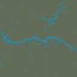
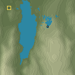
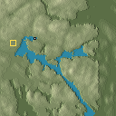
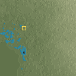
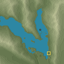

Crater Lake


Local pass yes · signature yes
Water retained in the same old footprint: 0.0% → 90.9%.
Before/after sheet: PR #34 versus this prototype at requested 128². Gallery: new results at requested 96² / 128² / 256²; scale changes are disclosed. Blue: simulated water; gold: start; white: origins. Reference: WorldCover water cells in the after frame; grey means incomplete coverage.
AWS Terrain Tiles / Mapzen and providers · © ESA WorldCover project 2021 / Contains modified Copernicus Sentinel data (2021) processed by ESA WorldCover consortium. Full notices. Local checks; no in-game tests.
Local pass yes · signature yes
Water retained in the same old footprint: 0.0% → 90.9%.


Local pass yes · signature yes
Water retained in the same old footprint: 0.0% → 99.6%.


Local pass yes · signature yes
Water retained in the same old footprint: n/a → n/a.


Local pass no · signature yes
Water retained in the same old footprint: 7.2% → 99.6%.


Local pass no · signature yes
Water retained in the same old footprint: 0.7% → 15.5%.



Local pass yes · signature yes
Water retained in the same old footprint: 57.6% → 83.2%.


Local pass yes · signature yes
Water retained in the same old footprint: 91.0% → 99.5%.


Local pass yes · signature yes
Water retained in the same old footprint: 21.9% → 99.7%.


Local pass yes · signature yes
Water retained in the same old footprint: 10.0% → 99.7%.


Local pass yes · signature yes
Water retained in the same old footprint: 71.1% → 99.6%.